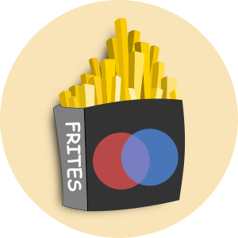

frites
0.0.0
Authors
API
Examples
Site
Contents:
API
Dataset
frites.dataset.DatasetEphy
frites.dataset.DatasetFMRI
Simulations
frites.simulations.sim_single_suj_ephy
frites.simulations.sim_multi_suj_ephy
Core
Gaussian-Copula (1d)
frites.core.copnorm_1d
frites.core.ent_1d_g
frites.core.mi_1d_gg
frites.core.mi_model_1d_gd
frites.core.mi_mixture_1d_gd
frites.core.cmi_1d_ggg
frites.core.gcmi_1d_cc
frites.core.gcmi_model_1d_cd
frites.core.gcmi_mixture_1d_cd
frites.core.gccmi_1d_ccc
frites.core.gccmi_1d_ccd
Gaussian-copula (Nd)
frites.core.copnorm_nd
frites.core.mi_nd_gg
frites.core.mi_model_nd_gd
frites.core.cmi_nd_ggg
frites.core.gcmi_nd_cc
frites.core.gcmi_model_nd_cd
frites.core.gccmi_nd_ccnd
frites.core.gccmi_model_nd_cdnd
frites.core.gccmi_nd_ccc
Authors
Source
Frites
¶

Contents:
API
Dataset
Simulations
Core
Authors
Indices and tables
¶
Index
Module Index
Search Page
 frites
0.0.0
frites
0.0.0